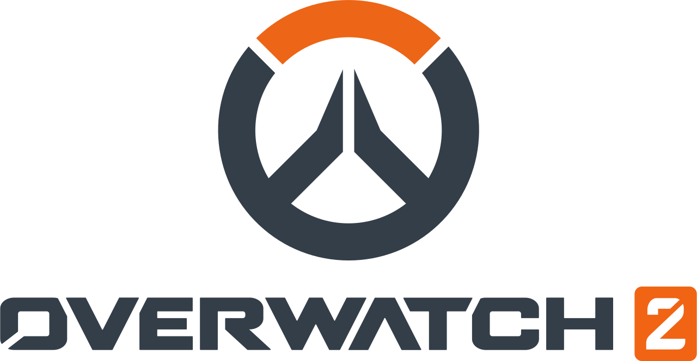

Overwatch je multimediálna séria zameraná na sériu online multiplayerových strieľačiek z pohľadu prvej osoby
Historia a súčastnosť hry Overwatch
Overwatch bol vydaný v roku 2016 a následovne v roku 2022 bolo vydané pokračovanie Overwatch 2. Oboje hra obsahuju hrdinovo-založeny boj medzi dvoma timmi hračov, deliace sa medzi množstvno cielov.
Pri vydaní hry v roku 2016 hre chybal akykolvek príbehový mód tak sa blizzard rozhodol použiť transmediálne rozprávanie príbehov na rozložinie pribehu týkajucich sa jednotlivych charakterov či udalosti vo svete, použili napriklad komixi a dokonca aj animovane media kde vznikly kratke animovane filmy.